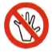
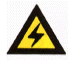
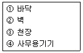

건설안전산업기사 (2003-03-16 기출문제)
1과목: 산업안전관리론
1. 위험예지훈련의 진행방법에서 3R(라운드)에 해당하는 것은?
- 목표설정
- 본질추구
- 현상파악
- 대책수립
(정답률: 82%)

2. Herzberg의 2요인 이론에 대한 설명 중 올바른 것은?
- 동기요인은 직무에 만족을 느끼는 주요인이다.
- 동기요인은 직무 만족과 관계가 없다.
- 위생요인은 직무에 만족을 느끼는 주요인이다.
- 위생요인은 직무내용이다.
(정답률: 74%)
3. 다음 인사선발의 방법 가운데 사무직에 적용하는 것으로 "자료제시검사" 나 "리더 없는 집단토의" 등의 예로서 문제해결 능력을 평가하기 위하여 고안된 것은?
- 면접
- 상황연습
- 심리검사
- 작업표본
(정답률: 65%)
4. 방진마스크의 선정기준 중 옳은 것은?
- 유효공간(사용적)이 클 것
- 분진포집(여과) 효율이 좋을 것
- 사방시야는 50° 이상 일 것
- 흡기저항은 낮고 배기저항은 높을 것
(정답률: 77%)
5. 피로현상은 작업능력의 저하를 가져온다. 이것은 다음 중 어떤 피로의 표식(標識)에 해당되는가?
- 주관적 피로
- 객관적 피로
- 생리적 피로
- 정신적 피로
(정답률: 49%)
6. 기업내 정형교육 가운데 작업의 개선방법 및 사람을 다루는 방법, 작업을 가르치는 방법 등을 교육내용으로 하는 것은?
- CCS(civil communication section)
- MTP(management training program)
- TWI(training within industry)
- ATT(american telephone & telegram co)
(정답률: 45%)
7. 다음 그림 중에서 금지표지는 어느 것인가?


(정답률: 82%)
8. 인간의 의식을 강화하고 오류를 감소하며 신속 정확한 판단과 조치를 위한 효과적인 방법은 다음 어느 것인가?
- 확인 철저
- 환호 응답
- 지적 환호
- 작업표준의 교육과 훈련
(정답률: 35%)
9. 산업안전 보건법상 중대 재해의 범위에 해당되지 않는 것은?
- 사망자가 1인 이상 발생한 재해
- 3개월 이상의 요양을 요하는 부상자가 동시에 2명 이상 발생한 재해
- 부상자 또는 직업성 질병자가 10명 이상 발생한 재해
- 식중독 및 전염성 질환이 다발로 일어난 재해
(정답률: 60%)
10. 취급하는 기계, 설비의 구조, 기능, 성능의 개념형성을 위하여 실시하여야 하는 교육은?
- 문제해결교육
- 기능교육
- 지능교육
- 태도교육
(정답률: 32%)
11. A 공장의 도수율이 10 이고 강도율이 1.5 라고 하면 이 공장의 종합재해지수는?
- 2.74
- 3.74
- 3.87
- 5.74
(정답률: 67%)
12. 다음 중 안전교육자의 자세로서 바람직하지 못한 것은?
- 상대방의 입장이 되어서 가르칠 것
- 쉬운 것에서 어려운 것으로 가르칠 것
- 되도록 전문용어를 사용할 것
- 중요한 것은 반복해서 가르칠 것
(정답률: 82%)
13. 하인리히의 사고 방지 대책 제3단계(분석)에서 하여야 할 내용과 가장 적합하지 않은 것은?
- 안전회의 및 토론회 개최
- 인적, 물적, 환경조건의 분석
- 교육훈련 및 배치 사항 파악
- 사고기록 및 관계자료 대조확인
(정답률: 43%)
14. 옛날부터 “유리공 백내장” 이란 이름으로 알려진 바와 같이 안구의 수정체에 특이한 변화를 일으켜 시력의 감퇴를 유발하거나 심할 경우에는 시력을 잃게 된다는 유해광선의 종류는?
- 적외선
- 가시광선
- 자외선
- X선
(정답률: 42%)
15. 리더십의 유효성(有效性)을 증대시키는 1차적 요소와 관계가 가장 먼 것은?
- 리더자신
- 추종자 집단
- 상황적 변수
- 조직의 규모
(정답률: 50%)
16. 50인의 상시 근로자를 가지고 있는 어느 사업장에 1년간 3건의 부상자를 내고 그 휴업 총일수가 200일 이라면 강도율은? (단, 소수점 셋째자리에서 반올림 할 것)
- 1.01
- 1.37
- 2.61
- 3.24
(정답률: 46%)
17. "인체에 상해, 사망 또는 질병을 유발시키거나 장비와 시설에 손상을 발생시키는 전혀 예상치 못한 사건 또는 일련의 사건" 은 어느 것의 정의인가?
- 재해
- 사고
- 직업병
- 부주의
(정답률: 32%)
18. 피로의 예방과 회복대책을 설명한 것이다. 틀린 것은?
- 작업속도를 적절하게 할 것
- 건강식품의 준비
- 작업부하를 크게 할 것
- 근로시간과 휴식을 적정하게 할 것
(정답률: 85%)
19. 교육의 3요소 중에서 교육의 주체는?
- 교육방법
- 교재
- 수강자
- 강사
(정답률: 70%)
20. 다음 중 리더십(leadership)의 특성이 아닌 것은?
- 밑으로 부터의 동의에 의한 권한부여
- 개인적 영향에 의한 부하와의 관계유지
- 넓은 부하와의 사회적 간격
- 민주주의적 지휘형태
(정답률: 46%)
2과목: 인간공학 및 시스템안전공학
21. 정보의 측정단위인 bit를 옳게 설명한 것은?
- 실현가능성이 같은 2개의 대안 중 하나가 명시되었을 때 얻는 정보량
- 실현가능성이 같은 4개의 대안 중 하나가 명시되었을 때 얻는 정보량
- 실현가능성이 같은 8개의 대안 중 하나가 명시되었을 때 얻는 정보량
- 실현가능성이 같은 16개의 대안 중 하나가 명시되었을 때 얻는 정보량
(정답률: 78%)
22. 다음 표지 장치 중 정적 표시 장치는?
- 온도계
- 속도계
- 고도계
- 그래프
(정답률: 69%)
23. 음압수준이 10dB 증가하면 음압은 몇 배가 되는가?
- √10배
- 10배
- √5배
- 5배
(정답률: 30%)
24. 인간 기계체계 설계시 인간공학적 해석방법이 아닌 것은?
- 링크해석법
- 웨이트식 중요 빈도법
- 공간지수법
- 워크샘플링법
(정답률: 34%)
25. 작업장에서 광원으로부터의 직사휘광을 처리하는 방법으로 옳은 것은 무엇인가?
- 광원의 휘도를 줄이고 수를 줄인다.
- 광원을 시선에서 가까이 위치시킨다.
- 휘광원 주위를 밝게 하여 광도비를 늘린다.
- 가리개, 차양을 설치한다.
(정답률: 56%)
26. 작업설계를 할 때 인간요소적 접근방법은?
- 작업만족도를 강조
- 능률과 생산성을 강조
- 작업순환과 배치를 강조
- 작업에 대한 책임을 강조
(정답률: 24%)
27. 인간의 신뢰성 요인 중 경험, 지식, 기술에 의존하는 요인은?
- 주의력
- 긴장수준
- 의식수준
- 지식수준
(정답률: 37%)
28. system에서 일반적으로 사용되는 고장의 형에 해당되지 않는 것은?
- 오동작
- 노후 고장
- 개로 또는 개방의 고장
- 폐로 또는 폐쇄의 고장
(정답률: 37%)
29. 성공수(success tree)의 정상사상을 발생시키는 기본사상들의 최소집합을 시스템 신뢰도 측면에서는 무엇이라고 하는가?
- cut set
- true set
- path set
- module set
(정답률: 78%)
30. 사무실 설계시 반사율이 낮은 것부터 순서대로 나열한 것은?

- ① - ② - ③ - ④
- ③ - ④ - ① - ②
- ① - ④ - ② - ③
- ① - ④ - ③ - ②
(정답률: 54%)
31. 고장은 기계의 신뢰를 결정한다. 불량제조나 생산과정에서의 품질관리 미비로 생기는 고장으로 점검작업이나 시운전으로 예방할 수 있는 고장은?
- 우발고장
- 마모고장
- 초기고장
- 평상고장
(정답률: 67%)
32. 인간의 실수 중 개인능력에 속하지 않는 것은?
- 긴장수준
- 피로상태
- 교육훈련
- 자질
(정답률: 27%)
33. 통제 표시비를 설계할 때 고려하는 여러 요소들 중 잘못 설명한 것은?
- 계기의 조절시간이 짧게 소요되도록 계기의 크기(size)는 항상 작게 설계한다.
- 짧은 주행 시간 내에 공차의 인정범위를 초과하지 않는 계기를 마련한다.
- 목시거리(目示距離)가 길면 길수록 조절의 정확도는 떨어진다.
- 통제 기기 시스템에서 발생하는 조작시간의 지연은 직접적으로 통제 표시비가 가장 크게 작용하고 있다.
(정답률: 64%)
34. 다음 중 시스템의 신뢰도를 증가시키는 방법 가운데 주어진 시스템과 동일한 시스템을 설치하여 신뢰도를 증가시키는 것은?
- 중복설계
- 부품개선
- 풀 프루프 설계
- 페일세이프 설계
(정답률: 56%)
35. 인간의 실수(human error)가 기계의 고장과 다른 점이 아닌 것은?
- 인간의 실수는 우발적 재발하는 유형이다.
- 기계나 설비(hardware)의 고장조건은 저절로 복구되지 않는 것이다.
- 인간은 기계와는 달리 학습에 의해 계속적으로 성능을 향상시킨다.
- 인간성능과 압박(stress)은 선형관계를 가져 압박이 중간정도일 때 성능수준이 가장 높다.
(정답률: 48%)
36. 인간이 기계를 조종하여 임무를 수행하여야하는 인간-기계체계가 있다. 만일 이 인간-기계 통합체계의 신뢰도가 0.8 이상 이어야 하며, 인간의 신뢰도는 0.9라 한다면, 기계의 신뢰도는 얼마 이상이어야 하는가?
- 0.6 이상
- 0.7 이상
- 0.5 이상
- 0.9 이상
(정답률: 39%)
37. 인간이 서로 마주하는 거리는 양자 간의 관계성의 정도를 표현해 준다. 다음 중 사회적 관계를 나타내는 사회적 거리로 적당한 것은?
- 120 ~ 360cm
- 360 ~ 750cm
- 45 ~ 75cm
- 15 ~ 45cm
(정답률: 62%)
38. 위험분석상의 강도를 분류할 시에 환경, 인원의 과오, 절차의 결함, 요소의 고장 또는 기능 불량이 시스템의 성능을 저하시키지만 인적ㆍ물적의 중대한 손해를 초래하지 않고 대처 또는 제어할 수 있는 상태는?
- 파국적(catastrophic)
- 중대(critical)
- 한계적(marginal)
- 무시가능(negligible)
(정답률: 63%)
39. 화학공정공장(석유화학사업장)에서 가동문제를 파악하는데 널리 사용되며, 위험요소를 예측하고 새로운 공정에 대한 가동문제를 예측하는 데 사용되는 것은?
- SHA
- HAZOP
- CCFA
- EVP
(정답률: 71%)
40. 예비위험분석에서 위험강도의 범주와 명칭이 맞게 연결된 것은?
- 범주Ⅰ - 무시
- 범주Ⅱ - 파국적
- 범주Ⅲ - 한계적
- 범주Ⅳ - 위기적
(정답률: 75%)
3과목: 건설시공학
41. A.E 콘크리트에 관한 기술 중 옳은 것은?
- 공기량은 A.E제의 양이 증가할수록 감소하나 콘크리트의 강도는 증대한다.
- 공기량은 기계비빔이 손비빔의 경우보다 적다.
- 공기량은 비벼놓은 시간이 길수록 증가한다.
- 공기량은 잔골재의 미립분이 많을수록 증가한다.
(정답률: 34%)
42. 건설공사의 품질관리의 목적과 거리가 먼 것은?
- 시공능률의 향상
- 설계의 합리화
- 작업의 표준화
- 비용의 최소화
(정답률: 30%)
43. 다음 중에서 거푸집공사에 긴결재로 사용되는 것이 아닌 것은?
- 동바리
- 폼타이
- 플랫타이
- 컬럼밴드
(정답률: 55%)
44. 피어(pier) 기초공사와 관계가 가장 적은 것은?
- 트레미관
- 벤토나이트액
- 디젤해머
- 케이싱관
(정답률: 67%)
45. 토공사의 히빙파괴의 방지책으로서 가장 안전한 것은?
- 강성이 높은 강력한 흙막이 벽의 밑끝을 양질의 지반속까지 깊게 밑둥넣기를 한다.
- 저면지반의 개량공법으로 개량한다.
- 지표면의 하중을 줄인다.
- 흙막이벽 재료를 강도가 높은 것을 사용하고 버팀대의 수를 증대시킨다.
(정답률: 26%)
46. 콘크리트 타설시 거푸집에 작용하는 측압에 대하여 옳지 않게 서술한 것은?
- 온도가 낮으면 경화속도가 느리기 때문에 측압은 약해진다.
- 슬럼프가 크면 측압은 커진다.
- 진동기를 사용하면 측압은 커진다.
- 벽두께가 얇을수록 측압이 작아진다.
(정답률: 55%)
47. 건설시공분야의 향후 발전방향으로 적합하지 않은 것은?
- 가설구조물의 강재화
- 시공의 기계화
- 재료의 프리패브(pre-fab)화
- 공법의 습식화
(정답률: 63%)
48. 널말뚝에 대한 설명으로 옳지 않은 것은?
- 목재 널말뚝은 수밀성이 적어 지하수가 많이 나오는 곳에는 부적당하다.
- 강재 널말뚝은 용수가 많고 토압이 크고 기초가 깊을 때 쓰인다.
- 널말뚝의 끝부분은 기초파기 바닥면에서 깊히 박히도록 하고 웰 포인트공법 등에 의해서 지하수위를 낮춘다.
- 널말뚝을 박을 때는 45°경사로 박는다.
(정답률: 74%)
49. 기존 건축물의 기초지정을 보강하거나 또는 거기에 새로운 기초를 삽입하거나 지지면을 더깊은 지반에 옮기는 공사의 통칭명은?
- 언더피닝 공법(under pinning method)
- 소일콘크리트 공법(soil concrete method)
- 웰포인트 공법(wellpoint method)
- 아일랜드 공법(island method)
(정답률: 72%)
50. 경량콘크리트 시공상의 주의사항과 거리가 먼 것은?
- 철근의 이음길이를 보통콘크리트에 비하여 길게하여야 한다.
- 경량골재는 배합하기 전에 완전히 건조시켜야 한다.
- 보와 바닥판의 콘크리트는 벽이나 기둥의 콘크리트가 충분히 안정된 후에 부어 넣어야 한다.
- 직접 흙 또는 물에 항상 접하는 부분에는 경량콘크리트의 시공을 금해야 한다.
(정답률: 43%)
51. 철골조립 및 설치에 있어서 사용되는 기계와 관계가 없는 것은?
- 진폴(Gin-pole)
- 윈치(Winch)
- 타워크레인(Tower crane)
- 리버스 서큘레이션 드릴(Reverse circulation drill)
(정답률: 61%)
52. 강관말뚝지정의 특징으로서 부적합한 것은?
- 강한 타격에도 견디며 다져진 중간지층의 관통도 가능하다.
- 지지력이 크고 이음이 안전하고 강하며 확실하므로 장척말뚝에 적당하다.
- 길이의 조절이 용이하고 경량이기 때문에 운반취급이 편리하다.
- 상부구조와의 결합이 용이하지 않으며 재료비가 저렴하다.
(정답률: 56%)
53. 콘크리트 강도에 가장 큰 영향을 미치는 것은?
- 자갈의 입도
- 물시멘트 비
- 골재의 배합비
- 시멘트 사용량
(정답률: 84%)
54. 철골 내화피복공사 중 멤브레인공법에 사용되는 재료는?
- 경량콘크리트
- 철망 모르타르
- 뿜칠 플라스터
- 암면 흡음판
(정답률: 39%)
55. 다음 중 토질시험 항목에 해당하지 않는 것은?
- 소성한계시험
- 3축압축시험
- 할렬인장시험
- 비중시험
(정답률: 68%)
56. 철근콘크리트공사 과정에서 철근의 이음 및 정착에 관한 설명 중 틀린 것은?
- 이음은 동일개소에서 철근수의 반 이상을 이어서는 안된다.
- 이음의 겹침길이는 갈고리 중심간의 거리로 한다.
- 주근의 이음은 구조부재에 있어서 압축력이 가장 작은 부분에 둔다.
- 경미한 압축근의 이음길이는 철근지름의 20배로 할 수도 있다.
(정답률: 40%)
57. 일반적인 건축물의 철근 조립순서로 옳은 것은?
- 기초철근→기둥철근→벽철근→보철근→슬래브철근→계단철근
- 기둥철근→기초철근→보철근→벽철근→계단철근→슬래브철근
- 기초철근→기둥철근→보철근→슬래브철근→벽철근→계단철근
- 기둥철근→기초철근→보철근→슬래브철근→계단철근→벽철근
(정답률: 59%)
58. 흙막이 벽에 미치는 간극수압의 영향을 계측할 수 있는 장비로 적당한 것은?
- Water level meter
- Inclino meter
- Extension meter
- Piezo meter
(정답률: 36%)
59. 공사입찰방식의 분류에 속하는 것이 아닌 것은?
- 파트너링방식
- 공개경쟁방식
- 지명경쟁방식
- 수의계약방식
(정답률: 59%)
60. 건설기계와 그 용도가 맞지 않는 것은?
- 불도저 - 정지 및 배토
- 드래그쇼벨 - 지반보다 낮은 곳의 굴착
- 클램쉘 - 수직 및 수중굴착
- 로더 - 정지작업
(정답률: 42%)
4과목: 건설재료학
61. 유화제(乳化劑)를 써서 아스팔트를 미립자로 수중(水中)에 분산시킨 다갈색 액체로서 깬 자갈의 점결제(粘結劑) 등으로 쓰이는 아스팔트 제품은?
- 아스팔트 프라이머(asphalt primer)
- 아스팔트 에멀젼(asphalt emulsion)
- 아스팔트 그라우트(asphalt grout)
- 아스팔트 콤파운드(asphalt compound)
(정답률: 39%)
62. 천연 슬레이트로 만들어 지붕, 벽 재료로 쓸 수 있는 암석의 종류는?
- 안산암
- 사암
- 현무암
- 점판암
(정답률: 41%)
63. 탄소강의 성질에 대한 설명으로 맞는 것은?
- 합금강에 비해 인장강도와 경도가 크다.
- 보통 저탄소강이 구조용으로 쓰인다.
- 열처리를 해도 성질 변화가 없다.
- 탄소함유량이 많으면 많을수록 경도가 커진다.
(정답률: 39%)
64. 다음은 목재의 가공제품인 MDF에 대한 설명이다. 옳지 않은 것은?
- 샌드위치 판넬이나 파티클 보드 등 다른 보드류 제품에 비해 매우 경량이다.
- 습기에 약한 결점이 있다.
- 다른 보드류에 비하여 곡면가공이 용이하다.
- 가공성 및 접착성이 우수하여 깔끔한 마감에 사용된다.
(정답률: 50%)
65. 바다 한가운데 암초가 있어 등대를 설치하고자 할 때 가장 부적절한 시멘트는?
- 보통포틀랜드 시멘트
- 고로 시멘트
- 실리카 시멘트
- 알루미나 시멘트
(정답률: 53%)
66. 합성수지의 장점에 관한 사항이 아닌 것은?
- 가공이 용이하다.
- 내화성이 크다.
- 내수성이 좋다.
- 용도가 다양하다.
(정답률: 50%)
67. 미장공사에서 바탕청소를 하는 주요 목적은?
- 바름층의 경화 및 건조촉진
- 바탕층의 강도증진
- 바름층과의 접착력향상
- 바름층의 강도증진
(정답률: 74%)
68. 물시멘트비를 65%로 콘크리트 1m3를 만드는데 필요한 물의 양으로 적당한 것은? (단, 콘크리트 1m3당 시멘트 8포대(1포대 = 40kg)임)
- 0.1m3
- 0.2m3
- 0.3m3
- 0.4m3
(정답률: 50%)
69. 표준형 내화벽돌의 보통형 치수로 맞는 것은? (치수는 길이 × 너비 × 두께 순) 단위=mm
- 230×114×59
- 230×1⑤×65
- 210×114×65
- 230×114×65
(정답률: 35%)
70. 목재의 성질에 관한 설명 중 틀린 것은?
- 목재의 심재는 변재보다 건조에 의한 수축이 적다.
- 함수율이 크면 강도는 작다.
- 목재의 함수율은 상태에 따라 다르나 보통 기건상태에서 함수율은 25% 내외이다.
- 목재의 함수율이 섬유포화점 이하로 될때부터 수축하기 시작한다.
(정답률: 64%)
71. 콘크리트에 관한 기술 중 틀린 것은?
- 콘크리트 강도는 일반적으로 물시멘트비가 증가하면 저하한다.
- A.E제를 사용한 콘크리트는 시공연도가 좋아지고 강도가 증가한다.
- 콘크리트와 이형철근의 부착강도는 콘크리트의 압축강도가 증가하면 커진다.
- 콘크리트 균열의 원인이 되는 경화 건조수축은 수(水)량이 크면 커진다.
(정답률: 34%)
72. 대리석의 성질과 용도에 관한 다음 기술 중 옳은 것은?
- 석질이 치밀하고 판석으로서 지붕 외벽 등에 붙이고 비석, 숫돌로 이용된다.
- 석질이 견고하고 조적재, 기초석재, 장식용으로 쓰인다.
- 내화도는 높으나 조잡하여 경량골재, 내화재 등에 사용한다.
- 석질이 치밀하고 열, 산에는 약하지만 미려하므로 장식용으로 최고급 재료이다.
(정답률: 61%)
73. 알루미늄의 용도로 적절하지 못한 것은?
- 벽 판넬용
- 난간용
- 주택 도어용
- 콘크리트 매설철물용
(정답률: 69%)
74. 금속과의 접착성이 크고 내약품성과 내열성이 우수하여 금속 도료 및 접착제, 콘크리트 균열 보수제 등으로 사용되는 열경화성 수지는?
- 에폭시 수지
- 아크릴 수지
- 염화비닐 수지
- 폴리에틸렌 수지
(정답률: 62%)
75. 다음은 점토에 관한 설명이다. 틀린 것은?
- 비중은 일반적으로 2.5~2.6 정도이다.
- 점토의 가소성은 입자가 미세할수록 저하한다.
- 점토는 미세입자 외에 모래크기의 입자가 포함된다.
- 점토는 건조하면 수분의 방출로 수축한다.
(정답률: 57%)
76. 건축재료로서 목재가 지니는 장점이 아닌 것은?
- 보수유지의 경제성이 크다.
- 마감질 등 가공이 용이하고, 시공성이 우수하다.
- 재질 및 섬유방향에 따라 강도의 차이가 있다.
- 종류가 다양하고 외관이 아름답다.
(정답률: 32%)
77. 수밀한 콘크리트를 만드는 방법으로 맞지 않는 것은?
- 이음부분을 최대한 적게 한다.
- W/C 비를 60% 정도 충분히 하여 밀실하게 다진다.
- 진동다짐을 충분히 한다.
- AE제 사용으로 시공연도를 높인다.
(정답률: 25%)
78. 시멘트의 보관 및 저장에 관한 설명 중 틀린 것은?
- 마루는 지상 30cm 이상 높게 설치한다.
- 시멘트는 13단 이하의 높이로 쌓는다.
- 개구부를 만들 때는 채광과 통풍을 고려하여야 한다.
- 공사에 지장이 없는 한 저장기간을 짧게 한다.
(정답률: 59%)
79. 창호철물 중 문을 열면 저절로 닫히는 장치는 어느 것인가?
- 도어ㆍ홀더
- 도어ㆍ스톱
- 도어ㆍ체크
- 도어ㆍ캐치
(정답률: 50%)
80. 인조석바름에 대한 설명 중 옳지 않은 것은?
- 인조석은 모르타르 바탕에 종석과 백시멘트, 안료, 돌가루를 배합 반죽한 것이다.
- 인조석 바름으로 한 마감면은 타 미장재료로 마감한것보다 수밀성 및 내구성이 우수하다.
- 캐스트스톤은 자연석과 유사하게 돌다듬으로 마감한 제품을 일컫는다.
- 인조석 정벌바름 후 숫돌로 연마해서 매끈하게 마감 하는 방법을 인조석 씻어내기라 한다.
(정답률: 31%)
5과목: 건설안전기술
81. 다음은 보일링(boiling)현상을 방지하기 위한 대책을 설명한 것이다. 옳지 않은 것은?
- 굴착배면의 지하수위를 낮춘다.
- 토류벽의 근입깊이를 깊게한다.
- 토류벽 상단부에 버팀대(strut)를 보강한다.
- 토류벽 선단에 코아 및 필터층을 설치한다.
(정답률: 23%)
82. 계단 및 계단참의 안전율은 얼마 이상이어야 하는가?
- 3
- 4
- 5
- 6
(정답률: 46%)
83. 차량계 건설기계를 사용하여 작업을 하고자 할 때 고려하여야 할 사항과 작업계획에 포함하여야 할 사항 중 가장 거리가 먼 것은?
- 차량계 건설기계의 종류 및 성능
- 차량계 건설기계의 운행 경로
- 차량계 건설기계에 의한 작업방법
- 차량계 건설기계의 점검 및 보수방법
(정답률: 42%)
84. 철골공사에서 안전을 위하여 사전 검토 또는 계획수립을 해야 하는 내용으로 가장 관련이 없는 것은?
- 추락방지망의 설치
- 사용기계의 용량 및 사용대수
- 기상조건의 검토
- 지하매설물 조사
(정답률: 46%)
85. 거푸집의 측압에 영향을 주는 요인을 설명한 것이다. 옳지 않은 것은?
- 콘크리트의 타설 속도가 빠를수록 측압은 커진다.
- 콘크리트의 슬럼프치가 크면 클수록 측압은 커진다.
- 콘크리트의 타설 온도가 높으면 높을수록 측압은 커진다.
- 기둥이 가장 크고 그 다음은 벽이다.
(정답률: 59%)
86. 크레인의 도괴 또는 전도에 의한 재해원인이 아닌 것은?
- 권과방지장치가 고장 났다.
- 크레인의 설치방법이 나쁘다.
- 이동식 크레인을 연약지반에서 지반보강재를 사용하지 않고 운반했다.
- 규정 이상의 중량물을 적재하고 운행했다.
(정답률: 50%)
87. 포틀랜드시멘트를 사용한 콘크리트 바닥슬래브 밑의 거푸집 존치기간에 대한 설명으로 옳지 않은 것은?
- 콘크리트 압축강도 50kgf/cm2 이상
- 설계기준강도의 2/3 이상
- 평균기온이 20℃ 이상일 때 재령 3일 이상
- 평균기온이 10℃ 이상 20℃ 미만일 때 재령 4일 이상
(정답률: 30%)
88. 다음 중 펌프카에 의한 타설 작업시 주의 사항으로 옳지 않은 것은?
- 레미콘 차에 유도자를 배치한다.
- 후렉시블 호스는 반경 1m 이하로 구부리지 않는다.
- 압력은 5kgf/cm2 로 조정하여 사용하여야 한다.
- 타설 배관의 두께는 0.5mm 이상의 것을 사용한다.
(정답률: 40%)
89. 사질지반의 굴착면의 구배와 높이가 맞게 짝지어진 것은?
- 35° - 5m 미만
- 45° - 5m 미만
- 35° - 2m 미만
- 45° - 2m 미만
(정답률: 25%)
90. 사다리식 통로를 설치할 때의 준수사항으로 틀린 것은?
- 견고한 구조일 것
- 사다리식 통로의 기울기는 80° 이하로 할 것
- 재료는 심한 손상, 부식 등이 없을 것
- 발판의 간격은 일정하게 할 것
(정답률: 83%)
91. 다음은 비계가 갖추어야 할 3요소 이다. 옳지 않은 것은?
- 안전성
- 작업성
- 경제성
- 영구성
(정답률: 70%)
92. 개착식 굴착공사의 흙막이공법 중 버팀보공법을 적용하여 굴착할 때 지반붕괴를 방지하기 위하여 사용하는 계측장치로 거리가 먼 것은?
- 지하수위계
- 경사계
- 록볼트응력계
- 변형률계
(정답률: 57%)
93. 충전전로 근접작업시 안전조치 사항으로 가장 관계가 없는 것은?
- 충전전로 이설
- 충전전로에 절연용 방호구 설치
- 경고표지 등 안전표지를 설치
- 근로자에게 절연용 방호구 착용
(정답률: 11%)
94. 크레인 등의 고리걸이 와이어로프의 사용금지 규정이 옳은 것은?
- 지름의 감소가 공칭지름의 7% 초과
- 지름의 감소가 공칭지름의 8% 초과
- 지름의 감소가 공칭지름의 9% 초과
- 지름의 감소가 공칭지름의 10% 초과
(정답률: 61%)
95. 건설용 리프트의 폭풍에 의한 도괴를 방지하는 조치를 하여야 하는 최소 풍속은?
- 순간 풍속 30m/s 이상
- 순간 풍속 35m/s 이상
- 순간 풍속 40m/s 이상
- 순간 풍속 45m/s 이상
(정답률: 27%)
96. 작업장에 설치하는 계단에 대한 설명 중 옳은 것은?
- 계단 및 계단참은 400kgf/m2 이상의 하중에 견딜 수 있어야 한다.
- 계단참은 그 높이가 3.5m를 초과하여 설치해서는 안된다.
- 목재로 된 난간은 5cm2 이상의 단면이어야 한다.
- 금속제 파이프로 된 난간은 3cm 이상의 지름이어야 한다.
(정답률: 27%)
97. 다음 중 공사현장에서 안전관리계획 수립원칙으로 옳지 않은 것은?
- 실천가능 할 것
- 회사방침과 일관성이 있을 것
- 해당공사 현장의 특성에 적합하고 구체적일 것
- 시공기술, 기계ㆍ자재 등 제 관리계획과 불균형일 것
(정답률: 74%)
98. 유해ㆍ위험방지 계획서를 제출해야 하는 경우 언제 누구에게 제출해야 하는가?
- 공사착공 15일 전에 국토해양부장관
- 공사착공 후 15일 이내에 국토해양부장관
- 공사착공 전날까지 고용노동부장관
- 공사착공 30일 전에 국토해양부장관
(정답률: 40%)
99. 다음 중 구조물 해체작업용 기계ㆍ기구의 종류가 아닌것은?
- 포크 리프트(Fork lift)
- 압쇄기
- 대형 브레이커
- 쐐기 타입기(Rock jack)
(정답률: 37%)
100. 근로자의 작업배치시 추락위험이 있을 때 비계 조립 등에 의하여 작업발판을 설치해야 하는 높이 기준은?
- 1m 이상
- 2m 이상
- 3m 이상
- 4m 이상
(정답률: 61%)